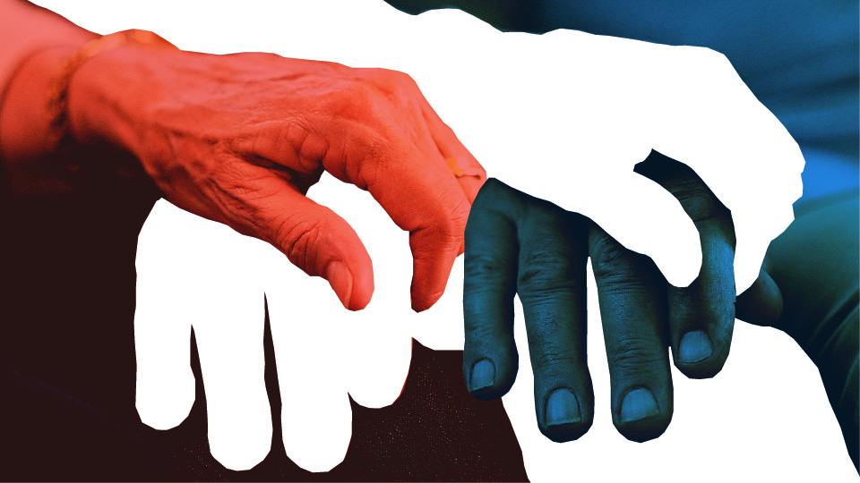
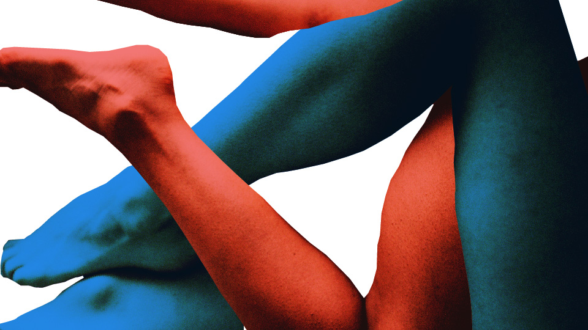
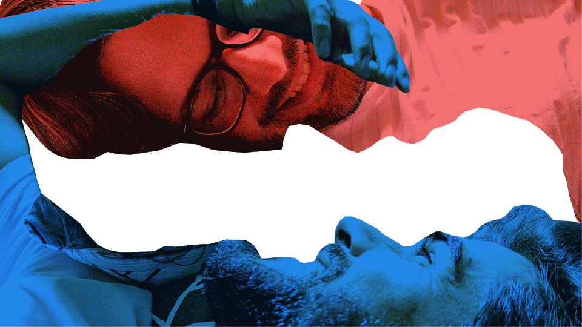

ilustrações editoriais
gama revista — 2020-2021
A Gama é a revista digital de comportamento e estilo de vida do grupo Nexo. Por ter um conteúdo diferenciado e direcionado ao longo prazo, suas produções exigem uma grande demanda de ilustrações. Essas são algumas das favoritas que produzi no último ano.



Ilustrações para a entrevista "Regina Navarro Lins: 'O sexo no casamento é uma tragédia'"

Estes projetos foram desenvolvido usando as ferramentas Adobe Illustrator e Adobe Photoshop, sob a direção de Guilherme Falcão e Rafaela Ranzani